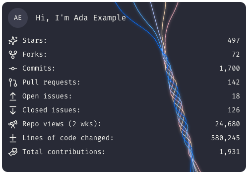
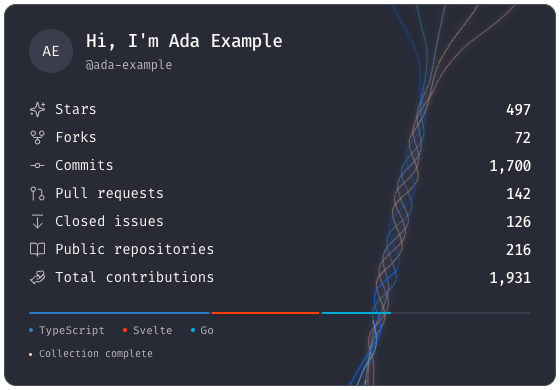
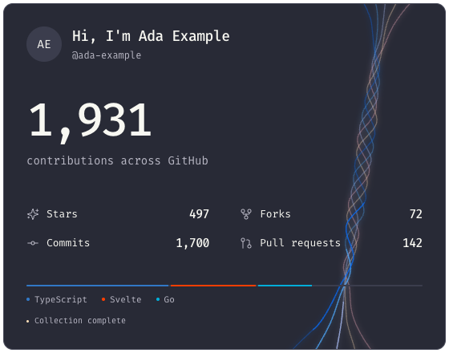
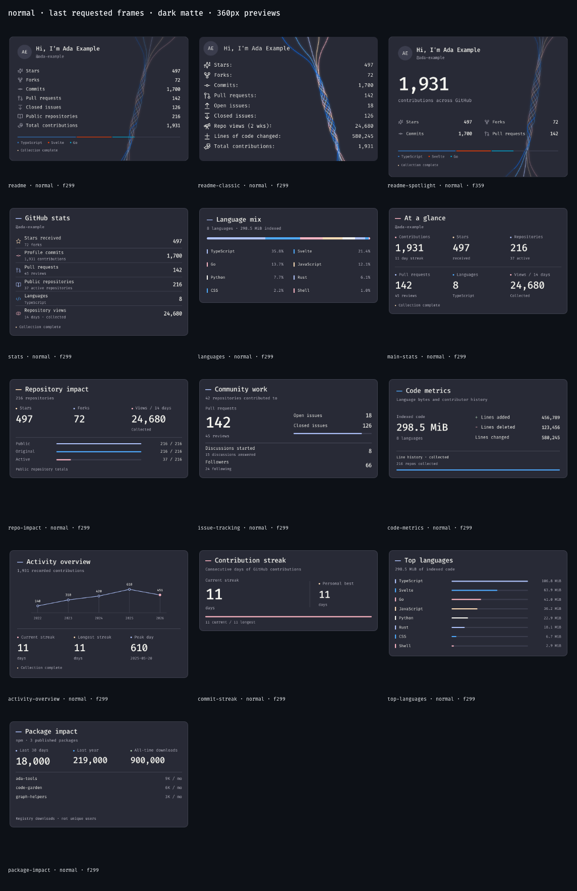

Diffler / rendered previews
A profile, with a little motion.
Classic's nine-row ledger, a compact Signature, and a contribution-led Spotlight. All previews use synthetic metrics, local initials, and bundled Fira Code. Preview exports are native-size; the library defaults to 2×.
Verification and file sizes · Historical evidence and design decisions



The full card family
Thirteen cards, including repository impact, language mix, contribution history, and package downloads. These are settled frames from the rendered-layout harness.
